Reunión — Asamblea Fundación Latidos
Presentación del Nuevo
Sistema de Gestión
Plataforma digital integrada que centraliza la gestión clínica, el apoyo y el voluntariado de Fundación Latidos
— devolviendo más tiempo al equipo para estar con los niños.
El primer encuentro con Fundación Latidos
Fiesta de Reyes Magos
En enero de 2026, participamos en familia con Fundación Latidos.
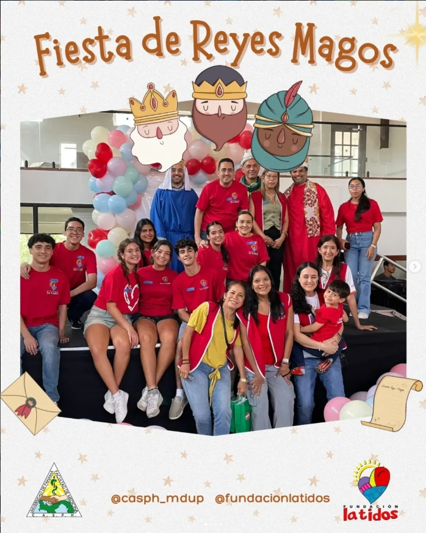
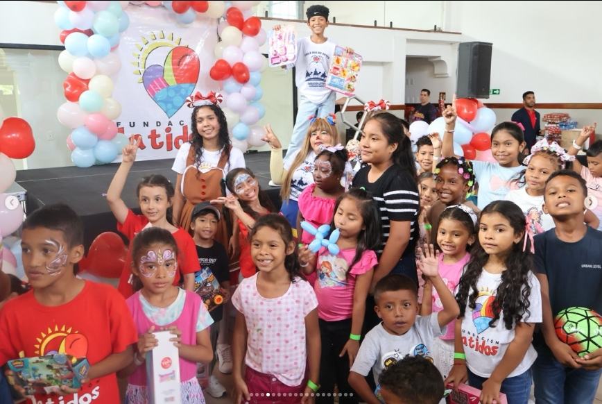
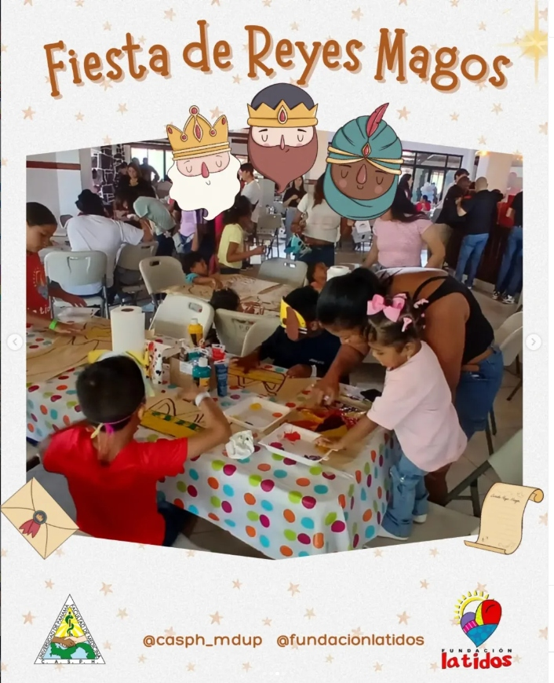
El primer encuentro con Fundación Latidos
Fiesta de Reyes Magos
Pintamos caritas a los niños, compartimos sonrisas y nació un lazo que continúa hasta hoy.
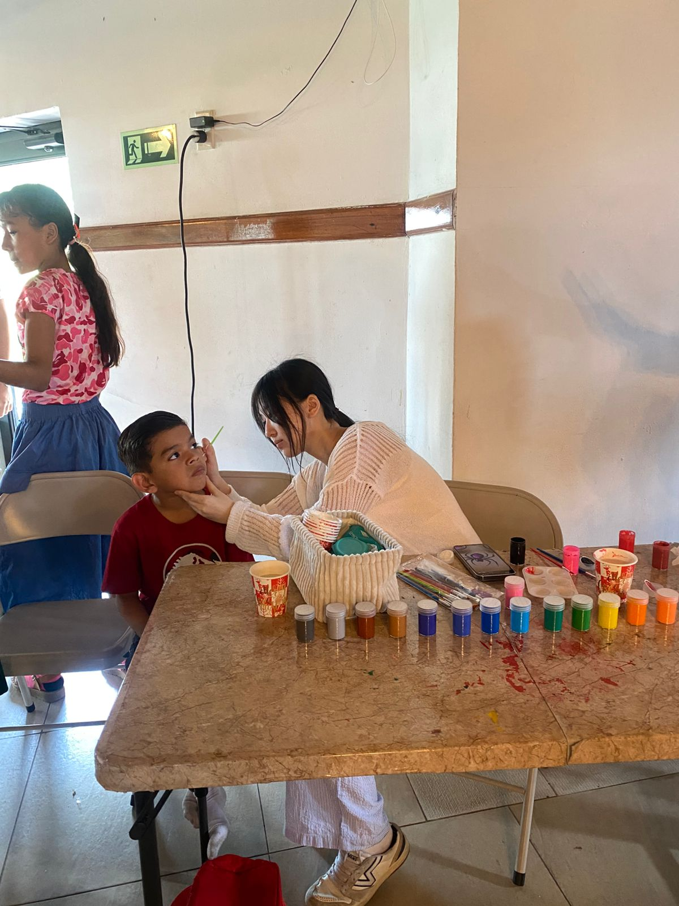
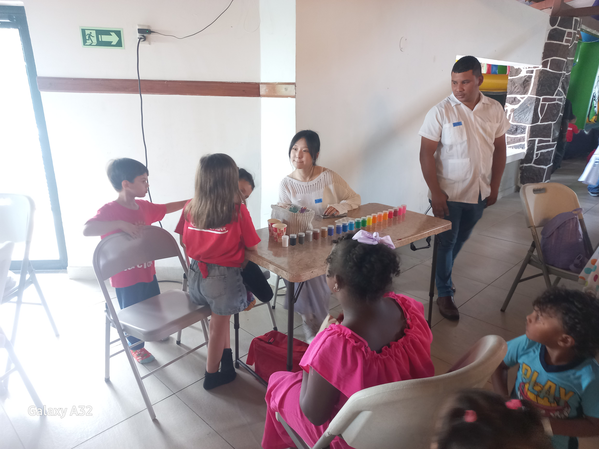
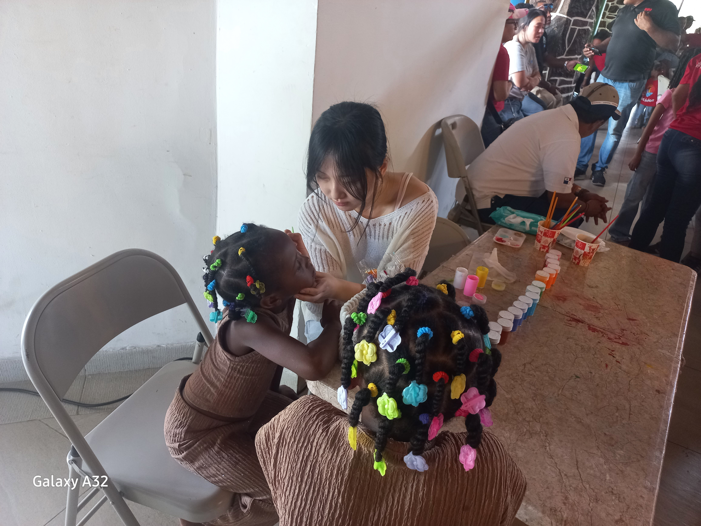
El lazo que continúa con los niños
Tutorías Académicas y Acompañamiento
Cada sábado nos reunimos para aprender y compartir sonrisas,
fortaleciendo nuestro vínculo con los niños semana a semana.
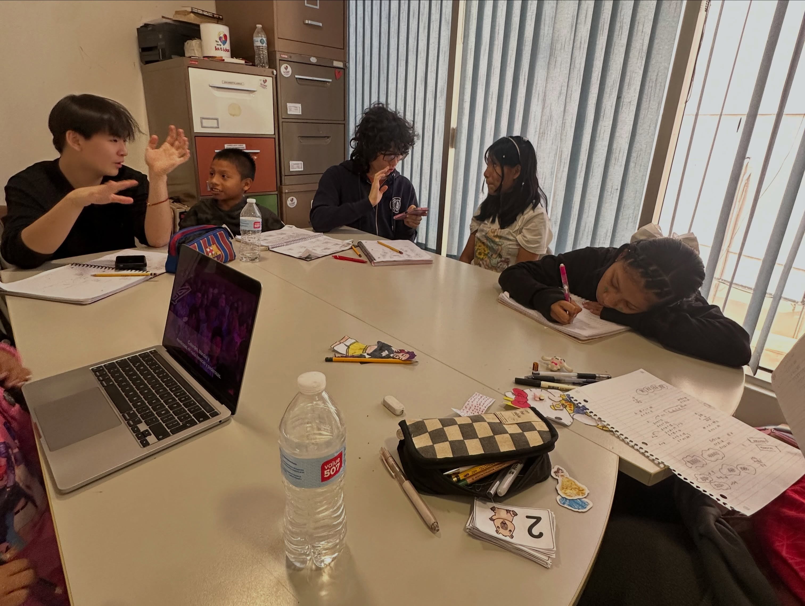
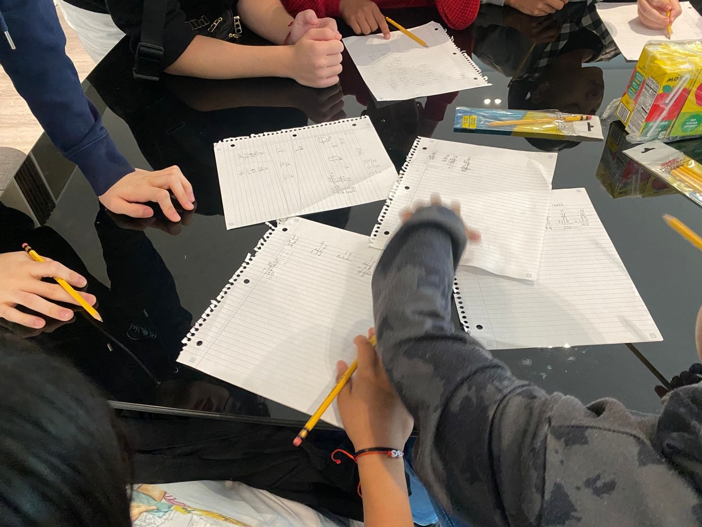
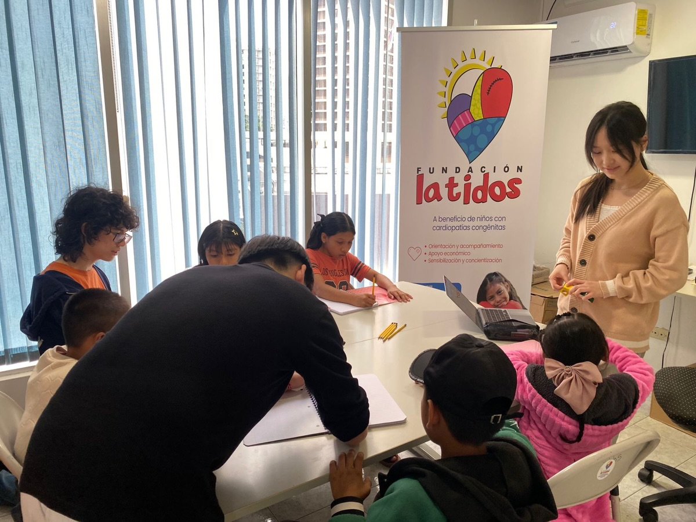
Parte de la familia Fundación Latidos
Momentos en Familia y un Futuro de Aprendizaje
Celebramos los cumpleaños juntos sintiéndonos una verdadera familia,
y desarrollamos una app educativa para acompañar el futuro de los niños.
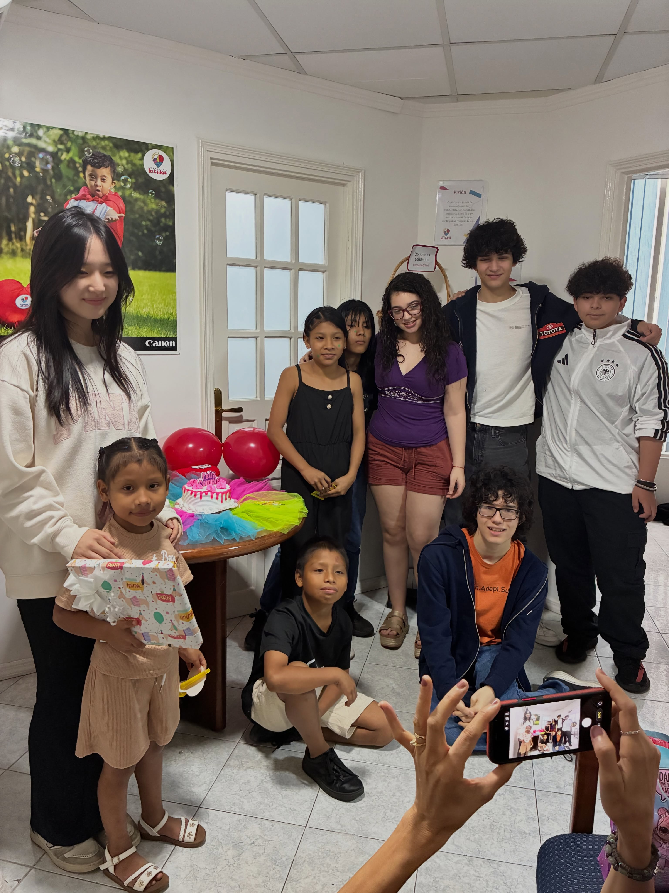
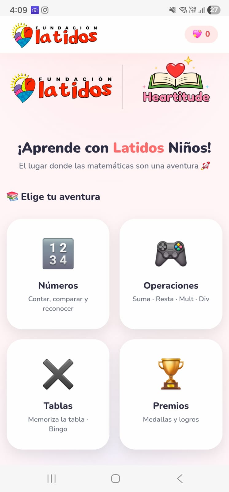
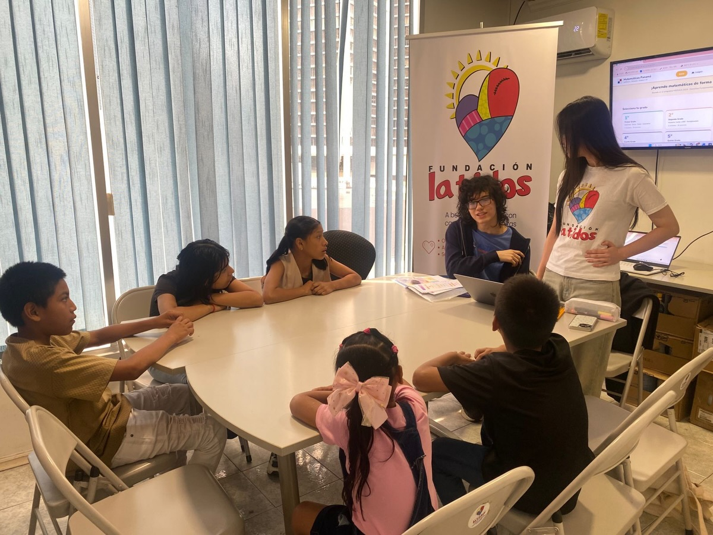
La realidad que encontramos en el hospital
Entrega en el Hospital y la Carga Administrativa
La hermosa labor de Latidos llevaba esperanza al Hospital del Niño,
pero su valioso tiempo se consumía en tareas administrativas.
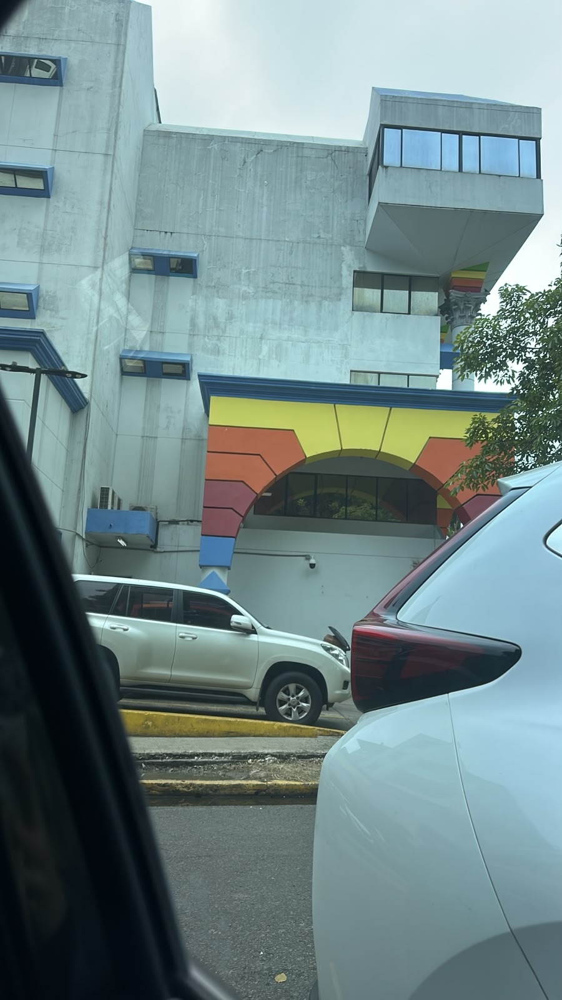
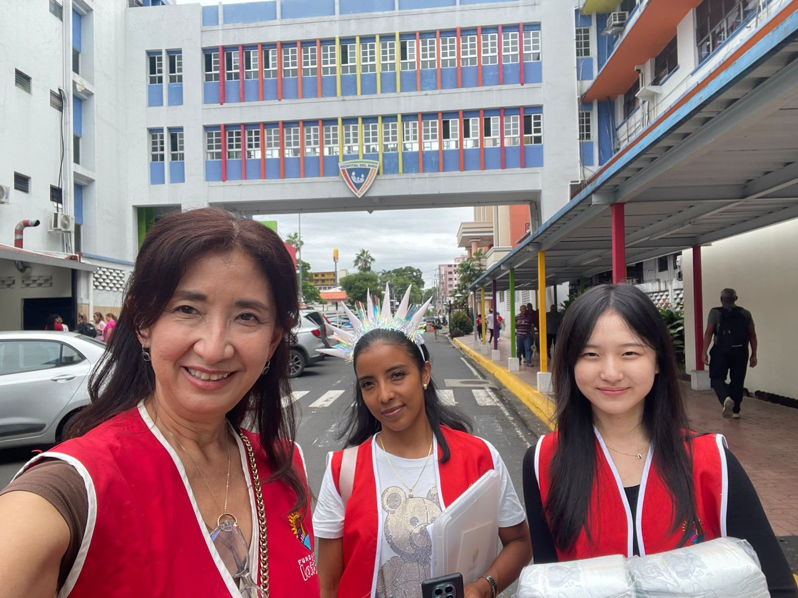
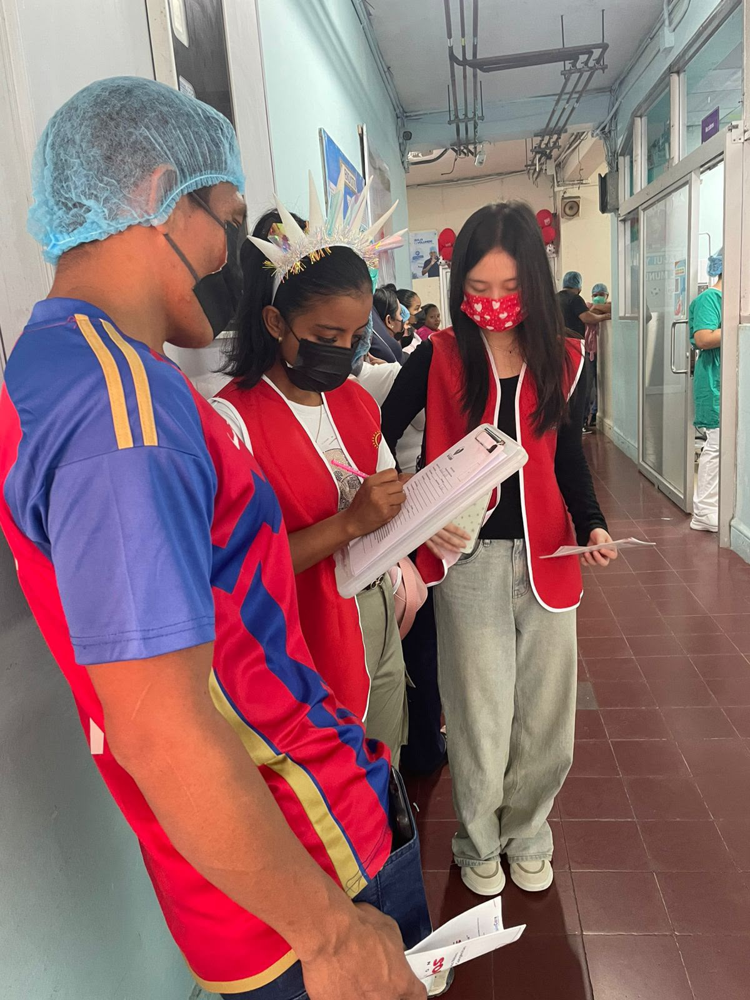
Por qué lo construimos
El Origen de Este Proyecto
Todo comenzó con un gesto de servicio voluntario. Conocimos a Fundación Latidos y, desde ese primer encuentro, nuestra relación con sus niños y con la Fundación no ha dejado de crecer.
Conocimos a Fundación Latidos a través del voluntariado. El vínculo creció hasta convertirse en tutorías académicas regulares.
A través del voluntariado, descubrimos la hermosa dedicación de Latidos. Para estar más presentes con estos niños, fundé Heartitude — un club escolar nacido de ese deseo.
La respuesta era clara: estando más presentes con los niños. Pero el tiempo valioso del equipo de Latidos estaba siendo consumido por tareas administrativas.
La respuesta
Un sistema para liberar ese tiempo
La respuesta fue clara: un sistema digital que gestione lo administrativo, para que el equipo pueda dedicarse por completo a los niños.
Lo que necesitábamos
El sistema digitaliza y centraliza el historial de los 717 pacientes: cirugías, ecocardiogramas y medicación, todo en un solo lugar.
El sistema gestiona la información de los donantes y el historial de donaciones, construyendo la confianza que hace posible el bien continuo.
Desde el registro de voluntarios hasta su historial de actividades, todo se gestiona en un solo lugar para que Latidos pueda estar más presente con los niños.
Todas las actividades se visualizan en un panel de resumen, permitiendo a la Fundación demostrar su impacto con datos.
El proceso conjunto
El camino que recorrimos juntos
No fue un proyecto de semanas. Fue un proceso largo, construido visita a visita, conversación a conversación, semana a semana.
Comenzamos recogiendo todo lo que existía: fichas de pacientes, documentos clínicos, registros de donaciones y suministros. Con ese material, discutimos juntos qué sistema de gestión era necesario.
Fuimos directamente a la sala de pediatría. Conversamos con las familias, escuchamos sus realidades y anotamos juntos lo que necesitaban. Eso nos enseñó más que cualquier reunión.
Cada sábado nos reuníamos para revisar, discutir y mejorar. Lo que no funcionaba, lo arreglamos. Lo que faltaba, lo construimos. Semana a semana, la plataforma fue tomando vida.
Lo que nos diferencia
Una plataforma diseñada solo para Latidos
No es una herramienta genérica. Es una plataforma construida desde la realidad de los niños que Latidos cuida, con seis funciones integradas y seguridad de nivel profesional.
Cirugías, ecocardiogramas y medicación — el historial completo de cada paciente, accesible en todo momento.
Información de donantes e historial de donaciones gestionados de forma sistemática, construyendo la confianza que hace posible el bien continuo.
Desde el registro hasta el historial de actividades, todo en un solo lugar para que Latidos pueda estar más presente con los niños.
Todas las actividades en un solo panel — el compromiso de la Fundación, demostrado con datos.
Síntomas, tratamiento y cuidado para cada tipo de cardiopatía congénita. Ningún otro sistema de gestión de ONGs ofrece esto.
Datos de pacientes, donaciones y asamblea protegidos con doble factor. Solo el personal autorizado puede acceder a información sensible.
F · Pantalla completa